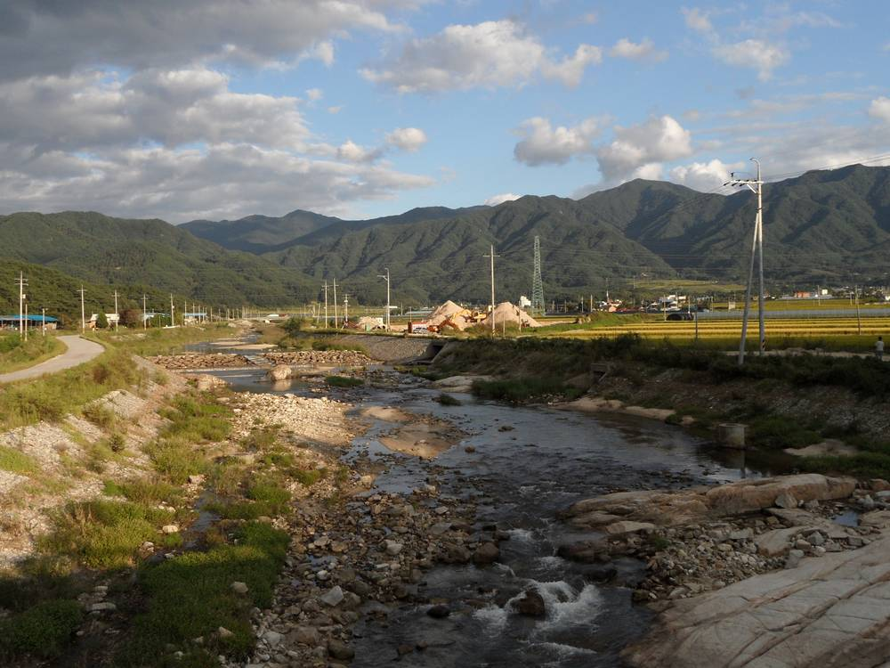

남원 9개 마을 햇빛소득마을 조건부 선정…시의회 연구단체 "이제는 사업화", 부지 발굴·자부담 지원 등 5대 과제 논의

여주 구양리·완주 서봉마을 사례 공유…발전수익으로 무료 점심·행복버스, 70세 이상 월 5만 원 경로연금
전북 남원시 9개 마을이 햇빛소득마을에 조건부로 선정된 가운데, 시의회 의원 연구단체가 실제 발전사업으로 이어가기 위한 과제를 짚었다. 남원시의회 남원미래정책연구회(대표의원 이상현)는 10일 저녁 시의회 대회의실에서 '햇빛소득마을의 정책적 의미와 지역의 실행과제'를 주제로 세미나를 열고 여주 구양리와 완주 서봉마을의 운영 경험을 살폈다. 강사로 나선 한석우 대통령직속 농어업·농어촌특별위원회 재생에너지특별위원장은 햇빛소득마을을 주민이 직접 소유하고 운영하는 지역 공동자산화 정책으로 규정하고, 발전수익으로 주민 무료 점심과 행복버스, 마을잔치를 운영하고 70세 이상 월 5만 원, 75세 이상 월 10만 원의 경로연금을 주는 사례를 소개했다. 그는 기초지방정부의 5대 과제로 부지 발굴, 예비마을 상시 육성, 주민 자부담과 지역금융 지원, 선정 뒤 사업화 전담체계, 주민 소유권과 공동체성 유지를 제시했다. 이상현 대표의원은 지원 조례 제정과 예산·기금을 활용한 재정 지원 방안을 찾고 추진 상황을 계속 점검하겠다고 밝혔다.
시민에너지 관점
조건부 선정은 출발선일 뿐이고, 전국 436곳 가운데 곧바로 착공할 수 있는 곳이 23곳뿐이라는 현실은 선정 이후의 행정 지원이 성패를 가른다는 것을 보여 준다. 구양리·서봉마을의 경로연금과 공동 점심은 발전수익이 마을 복지로 돌아올 때 주민 동의가 얼마나 단단해지는지를 증명한다. 가장 큰 걸림돌은 사업비의 15%인 주민 자부담인데, 독일 바이에른의 시민에너지 조합처럼 지역 금융이 저리로 출자금을 빌려주면 형편이 어려운 주민도 주인이 될 수 있다. 남원시의회는 조례에 자부담 지원 기금과 계통 확인 전담 창구를 함께 넣어 9개 마을이 모두 첫 발전을 하도록 끝까지 챙겨야 한다.
출처: 투데이안 2026-11-11 강기쁨 원문 보기
南原の9村が太陽光所得村に条件付き選定…市議会の研究団体「次は事業化」、用地発掘・自己負担支援など5大課題を議論
驪州・九陽里と完州・西峰村の事例を共有…発電収益で無料の昼食・幸福バス、70歳以上に月5万ウォンの敬老年金
全羅北道南原（ナムウォン）市の9村が太陽光所得村（ヘッピッ所得村）に条件付きで選ばれるなか、市議会議員の研究団体が実際の発電事業につなげるための課題を点検した。南原市議会の南原未来政策研究会（代表議員・李相賢〈イ・サンヒョン〉）は10日夜、市議会大会議室で「太陽光所得村の政策的意味と地域の実行課題」をテーマにセミナーを開き、驪州（ヨジュ）九陽里と完州（ワンジュ）西峰村の運営経験を検討した。講師を務めた大統領直属農漁業・農漁村特別委員会の韓錫祐（ハン・ソグ）再生可能エネルギー特別委員長は、太陽光所得村を住民が自ら所有・運営する地域の共同資産化政策と位置づけ、発電収益で住民の無料昼食や幸福バス、村の祭りを運営し、70歳以上に月5万ウォン、75歳以上に月10万ウォンの敬老年金を支給する事例を紹介した。同氏は基礎自治体の5大課題として、用地の発掘、予備村の常時育成、住民の自己負担と地域金融の支援、選定後の事業化専担体制、住民の所有権と共同体性の維持を挙げた。李代表議員は、支援条例の制定と予算・基金を活用した財政支援策を探り、進み具合を継続的に点検すると述べた。
市民エネルギーの視点
条件付き選定は出発点にすぎず、全国436カ所のうちすぐ着工できるのが23カ所だけという現実は、選定後の行政支援が成否を分けることを示している。九陽里や西峰村の敬老年金と共同の昼食は、発電収益が村の福祉に戻ってくるとき住民の同意がどれほど固くなるかを証明している。最大の障害は事業費の15%にあたる住民の自己負担だが、ドイツ・バイエルンの市民エネルギー組合のように地域金融が低利で出資金を貸せば、暮らし向きの苦しい住民も持ち主になれる。南原市議会は条例に自己負担支援基金と系統確認の専用窓口を盛り込み、9村すべてが初の発電にたどり着くまで最後まで見届けるべきだ。
出典: 투데이안 2026-11-11 강기쁨 原文を読む
南原9个村附条件入选阳光收入村，市议会研究团体称“下一步是落地”，讨论用地发掘、自筹支持等五大课题
分享骊州九阳里、完州西峰村经验：用发电收益提供免费午餐、幸福巴士，70岁以上老人每月5万韩元敬老金
韩国全罗北道南原市有9个村庄附条件入选“阳光收入村”，市议会议员研究团体就如何推动其真正落地为发电项目进行了讨论。南原市议会南原未来政策研究会（代表议员李相贤）10日晚在市议会大会议室举办以“阳光收入村的政策意义与地方实施课题”为主题的研讨会，考察了骊州九阳里和完州西峰村的运营经验。担任讲师的总统直属农渔业农渔村特别委员会可再生能源特别委员长韩锡佑把阳光收入村定义为由居民直接拥有和运营的地方共同资产化政策，并介绍了用发电收益为居民提供免费午餐、运营幸福巴士、举办村庄庆典，以及向70岁以上老人每月发放5万韩元、75岁以上每月10万韩元敬老金的案例。他提出基层地方政府的五大课题：发掘用地、常态化培育预备村、支持居民自筹资金和地方金融、建立入选后项目落地专责体系、维护居民所有权和社区共同体。李相贤代表议员表示，将研究制定支持条例并利用预算和基金提供财政支持，持续检查推进情况。
市民能源视角
附条件入选只是起点。全国436个入选村中能立即开工的只有23个，这一现实说明入选之后的行政支持决定成败。九阳里和西峰村的敬老金和共同午餐证明，当发电收益回流为村庄福利时，居民的支持会变得多么牢固。最大的障碍是占项目费用15%的居民自筹，如果像德国巴伐利亚的公民能源合作社那样由地方金融机构低息出借出资金，生活困难的居民也能成为主人。南原市议会应在条例中同时写入自筹支持基金和电网确认专门窗口，一直跟进到9个村全部实现首次发电。
来源: 투데이안 2026-11-11 강기쁨 查看原文
Nine Namwon Villages Conditionally Selected as Sunlight Income Villages; Council Study Group Says 'Now Make Them Real,' Weighs Five Tasks
Cases from Guyang-ri in Yeoju and Seobong village in Wanju shared: free lunches, a 'happiness bus' and pensions of ₩50,000 a month for residents over 70
With nine villages in Namwon, North Jeolla, conditionally selected as sunlight income villages, a city council study group examined what it will take to turn them into working power projects. The council's Namwon Future Policy Research Group, led by councillor Lee Sang-hyun, held a seminar on the evening of November 10 in the council's main hall on "the policy meaning of sunlight income villages and local tasks," reviewing the experience of Guyang-ri in Yeoju and Seobong village in Wanju. The speaker, Han Seok-woo, who chairs the renewable energy special committee of the Presidential Committee on Agriculture, Fisheries and Rural Policy, described the villages as a policy of turning local assets into commons owned and run by residents, citing cases where solar income pays for free lunches, a "happiness bus," village festivals and elderly pensions of ₩50,000 a month for those over 70 and ₩100,000 for those over 75. He set out five tasks for local governments: finding sites, continuously nurturing candidate villages, supporting residents' co-payments and local finance, a dedicated team to carry projects through after selection, and maintaining resident ownership and community. Lee said the group would pursue a support ordinance and budget- and fund-based financial help, and keep checking progress.
Citizen Energy View
Conditional selection is only the starting line; with just 23 of 436 selected villages nationwide able to start right away, support after selection decides success or failure. The pensions and shared lunches at Guyang-ri and Seobong show how firm residents' backing becomes when solar income returns as village welfare. The biggest hurdle is the residents' 15% co-payment, but if local lenders offer low-interest loans for shares, as with citizen energy cooperatives in Bavaria, even hard-pressed residents can become owners. Namwon's council should write a co-payment support fund and a dedicated grid-check desk into the ordinance, and see all nine villages through to their first kilowatt-hour.
Source: 투데이안 2026-11-11 강기쁨 Read the original